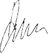

В настоящее время ФГУП «НИИСУ» находится в ведомственном подчинении Министерства промышленности и торговли РФ и является головной организацией по стандартизации, каталогизации, метрологическому обеспечению и управлению качеством оборонной продукции авиационной промышленности и промышленности обычных вооружений.
ФГУП «НИИСУ» - ведущая научная организация в области агрегатостроения для авиационной техники, организатор работ ТК 323 «Авиационная техника» и ИСО/ТК20 «Авиационные и космические аппараты», один из учредителей Некоммерческого партнерства «Союз авиапроизводителей».
Наша политика в области качества базируется на видении ФГУП «НИИСУ», как развивающегося и преуспевающего предприятия с динамичным и мотивированным персоналом, играющего ведущую роль в вопросах обеспечения качества продукции среди предприятий ОПК и других отраслей промышленности.
Наша миссия — научное и организационно-методическое обеспечение работ в области качества предприятий Минпромторга России, при этом удовлетворяя и превышая ожидания наших потребителей, снижая их риски и эффектино используя финансовые и другие ресурсы.
Мы — предприятие, ориентированное на заказчика.
Мы повышаем имидж предприятия путем непрерывного роста профессионализма каждого работника и ценим лидирующую роль руководителей подразделений, понимая, что реализация способностей работников — основа эффективной деятельности предприятия. На нашем предприятии качество обеспечивается улучшением процессов, а не усилением контроля готовой продукции.
| Генеральный директор ФГУП «НИИСУ» |
 | А.А. Алексашин |